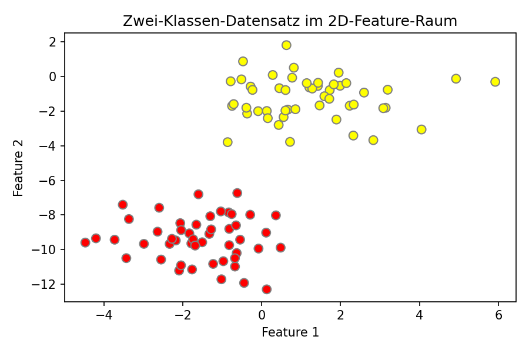
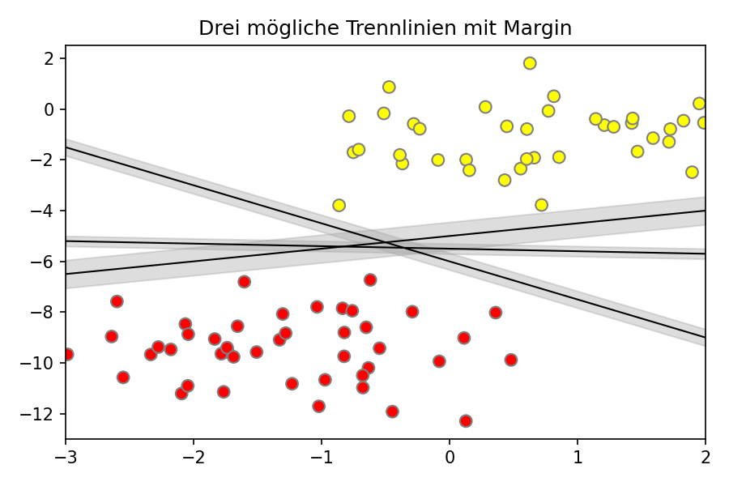
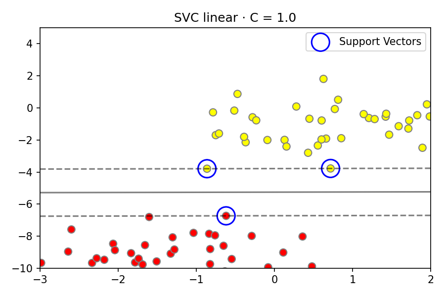

Definition
Support Vector Machines sind überwachte Lernverfahren, die eine optimale Entscheidungsgrenze im Feature-Raum suchen – mit maximalem Abstand zu den nächstliegenden Punkten beider Klassen.
Support Vector Machines gehören zu den bekanntesten und robustesten Modellen im Machine Learning. Diese Seite erklärt die Grundidee, warum ein Margin maximiert wird, was Support Vectors sind und wie eine SVC in sklearn trainiert wird.
SVMs sind diskriminative Klassifikatoren – sie suchen nicht nach der Wahrscheinlichkeitsverteilung der Daten, sondern direkt nach der bestmöglichen Trennlinie zwischen zwei Klassen.
Support Vector Machines sind überwachte Lernverfahren, die eine optimale Entscheidungsgrenze im Feature-Raum suchen – mit maximalem Abstand zu den nächstliegenden Punkten beider Klassen.
SVMs funktionieren für Klassifikation (SVC)
und Regression (SVR). Besonders stark bei
klein- und mittelgroßen
Datensätzen mit klar trennbaren Klassen.
Robust gegenüber Overfitting bei hochdimensionalen Daten, da der Fit nur von den Support Vectors abhängt – nicht vom gesamten Datensatz.
Bei sehr großen Datensätzen rechenintensiv.
Kernel-Wahl und Parameter C erfordern
Erfahrung oder systematisches Tuning.
Als Einstieg erzeugen wir mit make_blobs zwei Cluster
im 2D-Feature-Raum. Das Ziel: eine Trennlinie finden, die beide
Klassen zuverlässig trennt.
import matplotlib.pyplot as plt
from sklearn.datasets import make_blobs
# 100 Punkte, 2 Cluster
X, y = make_blobs(n_samples=100,
centers=2,
random_state=2,
cluster_std=1.2)
plt.figure(figsize=(5, 3.5))
plt.scatter(X[:, 0], X[:, 1],
c=y, s=50,
cmap='autumn',
edgecolors='gray')
plt.title("2D-Feature-Raum")
plt.xlabel("Feature 1")
plt.ylabel("Feature 2")
plt.tight_layout()
plt.show()

Es gibt unendlich viele Geraden, die zwei trennbare Klassen trennen. Die SVM wählt genau diejenige mit dem größten Abstand zu beiden Klassen.
Alle drei Geraden im Beispiel trennen die Klassen korrekt – sie unterscheiden sich aber stark im Abstand zu den Datenpunkten.
Um jede Trennlinie wird ein Margin gelegt – ein Streifen bis zu den nächstliegenden Punkten jeder Klasse. Dieser Streifen darf keine Punkte enthalten.
Die SVM wählt die Trennlinie mit dem breitesten Margin. SVMs heißen deshalb Maximum Margin Estimators. Ein breiter Margin bedeutet bessere Generalisierung auf neue Daten.
import matplotlib.pyplot as plt
from sklearn.datasets import make_blobs
# 100 Punkte, 2 Cluster
X, y = make_blobs(n_samples=100,
centers=2,
random_state=2,
cluster_std=1.2)
import numpy as np
import matplotlib.pyplot as plt
xfit = np.linspace(-3, 2, 200)
plt.figure(figsize=(5, 3.5))
plt.scatter(X[:, 0], X[:, 1],
c=y, s=50,
cmap='autumn',
edgecolors='gray')
for m, b, d in [(-1.5, -6, 0.33),
(0.5, -5, 0.55),
(-0.1, -5.5, 0.20)]:
yfit = m * xfit + b
plt.plot(xfit, yfit, '-k', linewidth=1)
plt.fill_between(
xfit,
yfit - d, yfit + d,
edgecolor='none',
color='#AAAAAA',
alpha=0.4
)
plt.xlim(-3, 2)
plt.title("Trennlinien mit Margin")
plt.tight_layout()
plt.show()

Die Decision Function berechnet für jeden Punkt seinen signierten Abstand zur Trennlinie und macht Entscheidungsgrenze sowie Margin-Ränder direkt sichtbar.
Der Wert ist 0 auf der Trennlinie, +1 auf der positiven und −1 auf der negativen Margin-Grenze. Punkte exakt auf diesen Grenzen sind die Support Vectors.
def plot_svc_decision_function(
model, ax=None,
plot_support=True):
if ax is None:
ax = plt.gca()
xlim = ax.get_xlim()
ylim = ax.get_ylim()
x = np.linspace(xlim[0], xlim[1], 30)
y = np.linspace(ylim[0], ylim[1], 30)
Y, X_g = np.meshgrid(y, x)
xy = np.vstack(
[X_g.ravel(), Y.ravel()]).T
P = model.decision_function(xy
).reshape(X_g.shape)
ax.contour(X_g, Y, P,
colors='k',
levels=[-1, 0, 1],
alpha=0.5,
linestyles=['--', '-', '--'])
if plot_support:
ax.scatter(
model.support_vectors_[:, 0],
model.support_vectors_[:, 1],
s=300, linewidth=1,
facecolors='none',
edgecolors='black')
ax.set_xlim(xlim)
ax.set_ylim(ylim)
Mit sklearn.svm.SVC lässt sich eine SVM in wenigen
Zeilen trainieren. Die wichtigsten Parameter sind
kernel und C.
| Parameter | Bedeutung | Typischer Wert |
|---|---|---|
kernel |
Art der Entscheidungsgrenze | 'linear', 'rbf', 'poly' |
C |
Regularisierung – Kompromiss Margin vs. Fehler | 1.0 (Standard) |
gamma |
Einflussradius eines Punkts (nur rbf/poly) | 'scale' (Standard) |
import matplotlib.pyplot as plt
from sklearn.datasets import make_blobs
# 100 Punkte, 2 Cluster
X, y = make_blobs(n_samples=100,
centers=2,
random_state=2,
cluster_std=1.2)
def plot_svc_decision_function(model, ax):
xlim = ax.get_xlim()
ylim = ax.get_ylim()
xx = np.linspace(xlim[0], xlim[1], 200)
yy = np.linspace(ylim[0], ylim[1], 200)
Y, Xg = np.meshgrid(yy, xx)
xy = np.vstack([Xg.ravel(), Y.ravel()]).T
P = model.decision_function(xy).reshape(Xg.shape)
ax.contour(Xg, Y, P, colors='k',
levels=[-1, 0, 1],
alpha=0.6,
linestyles=['--', '-', '--'])
import numpy as np
import matplotlib.pyplot as plt
from sklearn.svm import SVC
model = SVC(kernel='linear', C=1.0)
model.fit(X, y)
fig, ax = plt.subplots(figsize=(5, 3.5))
ax.scatter(X[:, 0], X[:, 1],
c=y, s=50,
cmap='autumn',
edgecolors='gray')
ax.set_xlim(-3, 2)
ax.set_ylim(-10, 5)
plot_svc_decision_function(model, ax)
ax.scatter(
model.support_vectors_[:, 0],
model.support_vectors_[:, 1],
s=300, lw=1.5,
facecolors='none',
edgecolors='blue',
label='Support Vectors')
ax.set_title(f'SVC linear · C={model.C}')
ax.legend()
plt.tight_layout()

Support Vectors sind die einzigen Punkte, die das Modell wirklich definieren. Alle anderen Trainingspunkte sind für das Ergebnis irrelevant.
Datenpunkte am Rand des Margins – genau auf den gestrichelten Linien bei ±1. Sie tragen die Trennlinie und definieren den Margin vollständig.
Entfernt man einen Nicht-Support-Vector, ändert sich das Modell nicht. Entfernt man einen Support Vector, verändert sich die Trennlinie.
model.support_vectors_ → Koordinaten der Support Vectors
model.n_support_ → Anzahl pro Klasse
model.support_ → Indizes im Datensatz
print("Support Vectors:")
print(model.support_vectors_)
print("\nAnzahl pro Klasse:",
model.n_support_)
print("Indizes im Datensatz:",
model.support_)Support Vectors: [[-1.72 2.34] [-0.91 1.87] [ 0.44 3.12] [-0.23 2.76] [ 1.05 1.43]] Anzahl pro Klasse: [2 3] Indizes im Datensatz: [14 26 51 63 77]
kernel='linear'
und C=1.0 findet die Trennlinie mit dem größten Margin.
Je weniger Support Vectors, desto einfacher und
generalisierbarer ist das Modell.
C → breiter Margin, mehr Generalisierung,
mehr erlaubte Fehler im Training.
Großes C → schmaler Margin, weniger Fehler,
Risiko von Overfitting.